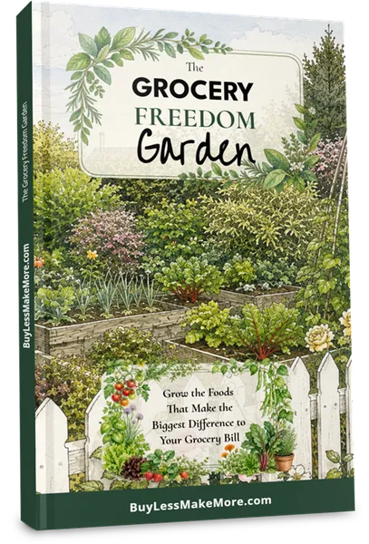
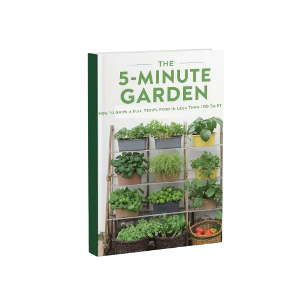
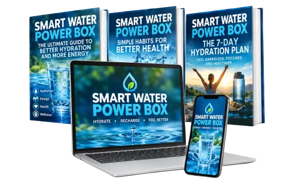
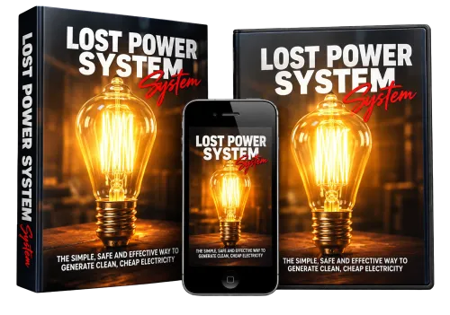
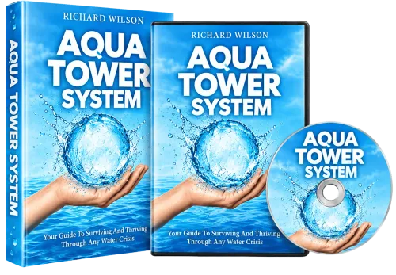

The Grocery Freedom Garden: Grow Food That Saves Money
Product profile · Marketplace data 2026-10-14 · Sales-page research 2026-10-14 · Categories: Home & Garden, Survival
- The Grocery Freedom Garden: Grow Food That Saves Money is a e-books in Home & Garden and Survival sold through the Digistore24 marketplace by vendor geckogully, listed since 2026-08-25.
- List price $37.00 (single payment) — checkout, delivery and refunds are handled by Digistore24 itself, not the vendor.
- Buyer protection: the sales page advertises a money-back guarantee — confirm the exact window at checkout.
Interested in The Grocery Freedom Garden: Grow Food That Saves Money? The current price, bonuses and guarantee terms live on the vendor's official page:
Check the official sales page
Affiliate link — we may earn a commission at no extra cost to you.

Marketplace record
| Product type | E-books |
|---|---|
| Price | $37.00 (Single payment) |
| Refund window | Per the vendor's sales page — check the official page before buying |
| Vendor | geckogully (listed since 2026-08-25) |
Vendor's marketplace description
The Grocery Freedom Garden is a 170-page illustrated digital guide plus a 13-page printable workbook that helps people decide which foods are actually worth growing if they want to reduce their grocery spending. Instead of giving readers another generic list of vegetables to grow, it starts with what their household already buys. Readers learn which crops can make the biggest difference to their grocery bill, then find realistic places to grow them using the space they already have. The offer can be promoted to audiences interested in vegetable gardening, grow-your-own food, grocery savings, frugal living, self-sufficiency, homesteading, container gardening and small-space gardening. Affiliates earn 60% commission and receive extensive promotional support , including ready-to-use emails, Facebook and Instagram posts, longer social posts, product images, social graphics and multiple promotional angles. The product is suitable for beginners as well as existing gardeners who want their garden to contribute more towards their grocery bill.
From the vendor's sales page
Page title: The Grocery Freedom Garden | Buy Less. Make More.
Meta description: A practical guide to growing the foods that can make the biggest difference to your grocery bill, using the space and resources you already have.
Headline
The Grocery Freedom Garden
Section headlines
- Most gardening advice begins with what you could grow.
- A useful garden is planned backwards from the kitchen.
- Your garden does not need to look like a vegetable garden.
- From grocery trolley to first 90-day plan
- Good decisions become a plan on paper.
- Some crops naturally work harder for a household.
- Fresh herbs can replace more than one purchase.
- A complete beginner has a clear place to start.
- The existing garden does not have to disappear.
- Your ideas become a plan you can use.
Opening copy
A practical way to decide what is worth growing for your household, where it can fit and how to keep useful food coming, without turning your whole garden or your whole life upside down.
A different starting point Most gardening advice begins with what you could grow. This guide begins at the supermarket.
A packet of herbs, a bag of salad leaves, a punnet of berries or a couple of capsicums may not look like much on one shopping trip. Regular purchases add up over a year.
Prices mentioned on the page: $37
Guarantee language found: “60” — always confirm the current terms on the official page before relying on it.
CTA buttons: “Buy Less. Make More.” · “Buy Now”
Research method: raw HTML fetch · 1723 words on page · quality: rich · researched 2026-10-14. Full research file (MD) ↗
How products like this are delivered
General note about this product type (not vendor-specific instructions): E-books on Digistore24 are delivered as a digital download (usually PDF/EPUB): right after checkout you get a download link or member-area access, and can read on any device. For the exact usage of The Grocery Freedom Garden: Grow Food That Saves Money, the official sales page and included materials are the authoritative source.
What is The Grocery Freedom Garden: Grow Food That Saves Money?
The Grocery Freedom Garden: Grow Food That Saves Money is a e-books in the Home & Garden category of the Digistore24 marketplace, published by vendor geckogully and on sale since 2026-08-25. The vendor describes it as follows: "The Grocery Freedom Garden is a 170-page illustrated digital guide plus a 13-page printable workbook that helps people decide which foods are actually worth growing if they want to reduce their grocery spending. Instead of giving readers another generic list o" (vendor's marketplace description, lightly truncated).
The Grocery Freedom Garden: Grow Food That Saves Money pricing: what you will pay
The marketplace lists The Grocery Freedom Garden: Grow Food That Saves Money at $37.00 (single payment). Digistore24 adds any tax your country requires at checkout, where you see the final amount before paying. The sales page itself mentions: $37 (vendor claims — the checkout total is the binding one). There is no separate marketplace-side fee; vendors may offer their own upsells after checkout.
The Grocery Freedom Garden: Grow Food That Saves Money refund policy and money-back guarantee
The sales page advertises: "60" (vendor claim). Refunds for Digistore24 purchases are processed through the platform: request via the support link in your order email, within the vendor's guarantee window shown at checkout. Practical advice: decide inside the window — if the product underdelivers, refund it rather than letting it ride.
Details and mechanics: how Digistore24 refunds work.
Who is The Grocery Freedom Garden: Grow Food That Saves Money for?
Based on its Home & Garden classification and single payment pricing, The Grocery Freedom Garden: Grow Food That Saves Money targets buyers looking for home & garden solutions at a mid-range price point. The honest test is not the category but your own situation: will you realistically use it within the refund window? If yes, the price is an investment; if not, it is clutter — regardless of quality.
Is The Grocery Freedom Garden: Grow Food That Saves Money legit? What to verify before buying
We do not rate legitimacy — nobody can, without using the product. What you can verify, all on this page: the vendor's marketplace history (listed since 2026-08-25), the verbatim sales-page extracts below (labeled vendor claims — their marketing, not our endorsement), the guarantee terms at checkout, and the delivery method. Red flags to check on any offer: pressure countdowns paired with vague refund terms, testimonials without dates, and vendor sites that hide pricing until checkout.
How do you access The Grocery Freedom Garden: Grow Food That Saves Money after buying?
Checkout runs on Digistore24. After payment: E-books on Digistore24 are delivered as a digital download (usually PDF/EPUB): right after checkout you get a download link or member-area access, and can read on any device. Keep your order email — it is your key to the e-books, your refund requests and Digistore24 buyer support.
The Grocery Freedom Garden: Grow Food That Saves Money reviews: how to research it properly
Third-party "reviews" of marketplace products are mostly affiliate content — including pages like this one, which earns a commission on purchases. Treat every review (ours included) as a starting point, then verify against primary sources: the vendor's own sales page, the Digistore24 refund policy, and — for home & garden — independent communities outside the affiliate ecosystem. On this page the sales-page extracts below are quoted verbatim, so you can judge the vendor's claims without clicking away.
How to buy The Grocery Freedom Garden: Grow Food That Saves Money safely
- Open the official sales page and read the full offer.
- Confirm the final price and the refund window on the Digistore24 checkout page — that page is binding, not any review.
- Pay inside the Digistore24 checkout (never by bank transfer or off-platform links).
- Save the order confirmation email; note the refund deadline in your calendar.
- Evaluate promptly. Digistore24 buyer support can help if the vendor is unresponsive.
Full research archive for this product (Markdown: complete marketplace record + verbatim sales-page extracts): The Grocery Freedom Garden: Grow Food That Saves Money — data archive (.md).
- Listed price & billing — source: official Digistore24 marketplace API, snapshot 2026-10-14. The checkout page is always the binding source for the current price.
- Sales-page quotes & headline — source: https://buylessmakemore.com/GFG_sales-page.html?aff=[AFFILIATE]&cam=[CAMPAIGNKEY], fetched 2026-10-14 (method: raw HTML). Verify: open the official page.
- Guarantee / refund — set by the vendor; confirm on the sales page at purchase time.
- Not verified by us: product quality, outcomes, testimonials — no hands-on test has been performed for this listing.
Frequently asked questions about The Grocery Freedom Garden: Grow Food That Saves Money
Answers compiled from the marketplace snapshot (2026-10-14) and vendor sales-page research (2026-10-14); vendor claims are labeled inline.
What is The Grocery Freedom Garden: Grow Food That Saves Money?
The Grocery Freedom Garden: Grow Food That Saves Money is a e-books sold through the Digistore24 marketplace by vendor geckogully, listed since 2026-08-25. It is filed under Home & Garden and Survival. Digistore24 handles checkout, delivery and refunds for this product.
How much does The Grocery Freedom Garden: Grow Food That Saves Money cost?
The Digistore24 marketplace lists it at $37.00 (single payment). Prices are set by the vendor and can change — the marketplace record above shows the snapshot; the official sales page shows the current price.
Is there a money-back guarantee for The Grocery Freedom Garden: Grow Food That Saves Money?
The vendor's sales page advertises: “60”. The guarantee window is set by the vendor — confirm the current terms on the official page before buying. Digistore24 handles the refund process.
Is The Grocery Freedom Garden: Grow Food That Saves Money legit?
We don't rate legitimacy — we publish verifiable data instead: vendor geckogully (listed on Digistore24 since 2026-08-25), listed on the marketplace since 2026-08-25, with its complete sales-page research archived on this page (vendor claims labeled as such). Read our 6-point evaluation method and judge with the facts — or join the discussion about The Grocery Freedom Garden: Grow Food That Saves Money.
Where can I buy The Grocery Freedom Garden: Grow Food That Saves Money safely?
Only through the official sales page linked on this site (checkout and refunds run via Digistore24). Verify the price and guarantee there before ordering. That link is an affiliate link — buying through it supports this site at no extra cost to you.
How do I get The Grocery Freedom Garden: Grow Food That Saves Money after paying?
Checkout runs on Digistore24: after payment you receive your access or download by email and in your Digistore24 customer account. Delivery details for this product type: E-books on Digistore24 are delivered as a digital download (usually PDF/EPUB): right after checkout you get a download link or member-area access, and can read on any device. If anything fails, Digistore24 buyer support can recover your order.
All 50 buyer questions about Home & Garden — the full category FAQ.
Discuss The Grocery Freedom Garden: Grow Food That Saves Money on Reddit
Community threads are where real buyers compare notes. We link to communities, not to specific posts — threads move, subreddits stay:
- r/DIY — community discussions that often touch home & garden.
- Search Reddit for "The Grocery Freedom Garden: Grow Food That Saves Money" — real-time results, we don't control them.
- Top "review" mentions this year — sort by top, filter by recency yourself.
Related shopping on Amazon
Physical products and gear commonly bought alongside The Grocery Freedom Garden: Grow Food That Saves Money:
- Shop home garden tools on Amazon — top results, Amazon's ranking.
- Bestsellers in home garden tools — live Amazon list, we don't curate it.
Sponsored: as an Amazon Associate, DigistorePicks earns from qualifying purchases (tag adminstore05-20). Amazon sets its own prices and commissions (typically low single digits — far below Digistore24 vendors' 30–75%). We list Amazon as a convenience for physical goods; it is not an alternative to the digital product above.
Related offers in Home & Garden
Zero refunds in 2 months. Fast support — promo materials delivered within 2 days of request. Let's grow together!
Earn 40% Commission Promoting Health - Deliverable Partner with Tudormi – Premium Grounding Products, Proven Results, and Big Earnings! Tudormi is on a mission

Tap into the booming trends of food security, self-sufficiency, and rising grocery costs. This offer converts like crazy with health-conscious families, urban p
The Grocery Freedom Garden: Grow Food That Saves Money is also listed in
Survival (40 products)
Similar price range in Home & Garden
BRAND NEW for 2026 from 11x ClickBank Platinum Vendor! Open to ALL affiliates. 90% on the entire funnel! AI fear = money in your pocket. Desperate market = 6.1%

High Converting Survival Water Product! This Is The Winning Offer You Were Looking For With Huge EPC! It Works On Energy/solar, Home/garden/woodworking And Prep

NEW ABSOLUTE CONVERSIONS MONSTER ON DIGISTORE24 We have crushed it on CB. It's time to share the Love with Digistore24. Right now the numbers look really go

High Converting Survival Water Product! This Is The Winning Offer You Were Looking For With Huge EPC! It Works On Energy/solar, Home/garden/woodworking And Prep
Related searches
Where to check it out
Read the vendor's full sales page (current price, guarantee terms and bonuses are listed there):
View official sales page
That link is an affiliate link — if you buy through it we earn a commission from the vendor at no extra cost to you.
Sources & further information
- Official sales page (current price, guarantee, bonuses): buylessmakemore.com/GFG_sales-page.html?aff=[AFFILIATE]&cam= (affiliate link)
- Public Digistore24 product page: checkout-ds24.com/product/722515
- Full research file (Markdown, versioned): content/products/58634-the-grocery-freedom-garden-grow-food-that-saves-money.md
- Vendor's affiliate support page: buylessmakemore.com/GFG_affiliate-resources.html
- Marketplace category: Home & Garden
How we evaluate products like The Grocery Freedom Garden: Grow Food That Saves Money
Six checks, all on official marketplace numbers — earnings/sale ÷ cancel-rate skepticism × funnel fit. Read the full evaluation method · our research standards & labeling.
Questions, or own experience with The Grocery Freedom Garden: Grow Food That Saves Money?
We publish hands-on reviews only after buying a product ourselves — but your experience helps other readers: start or join the discussion about The Grocery Freedom Garden: Grow Food That Saves Money on GitHub. Found a wrong number? Report a correction — every page shows its data dates, and corrections are applied to the whole site.